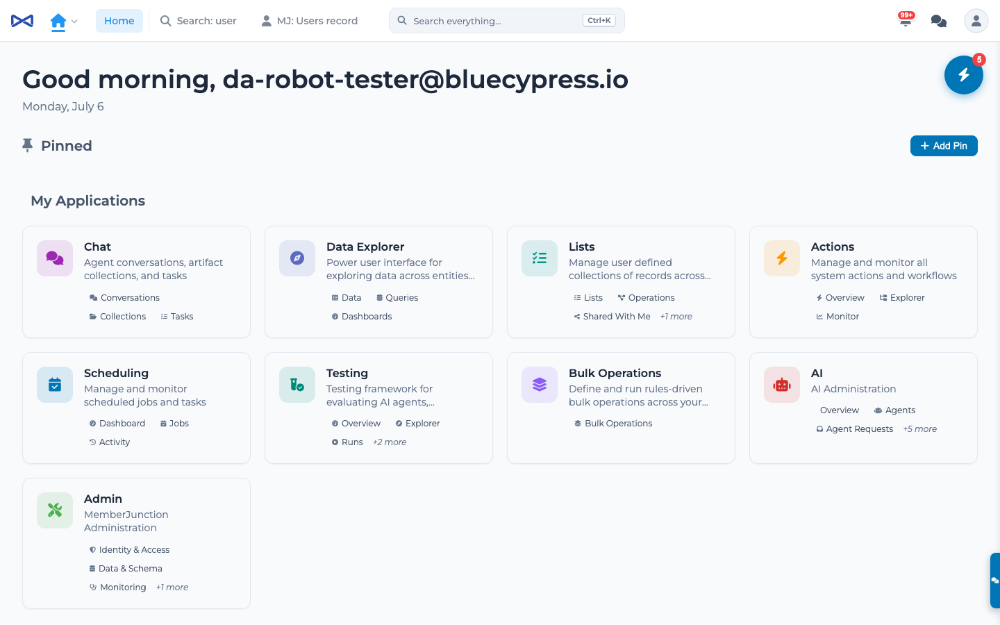
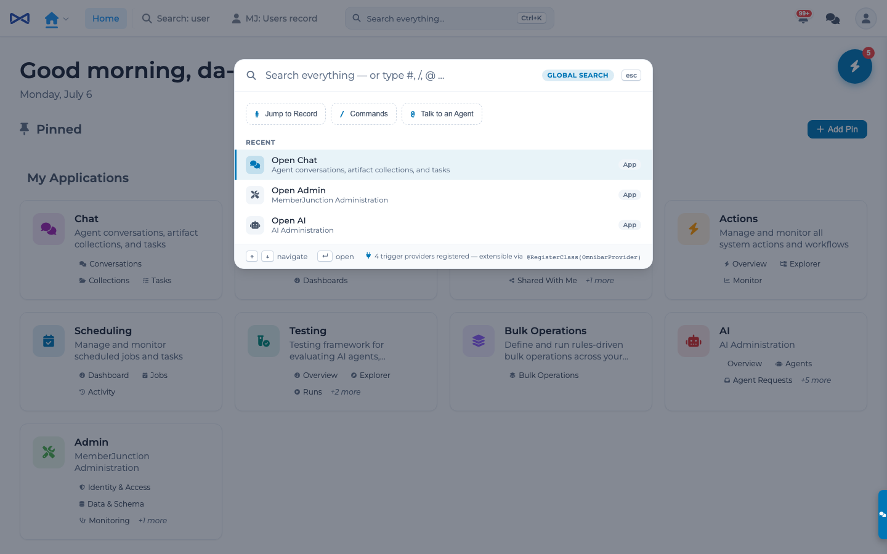
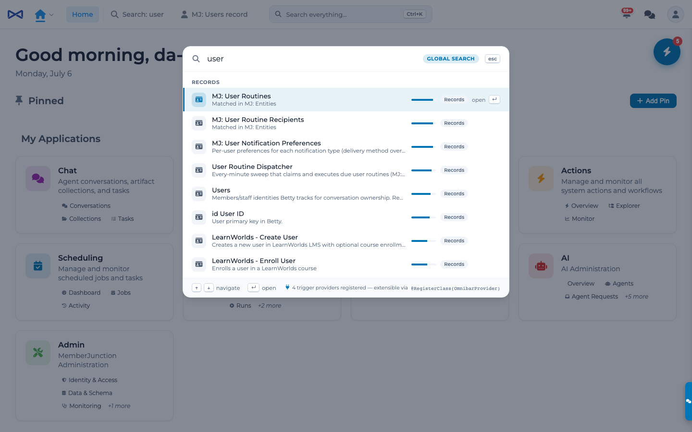
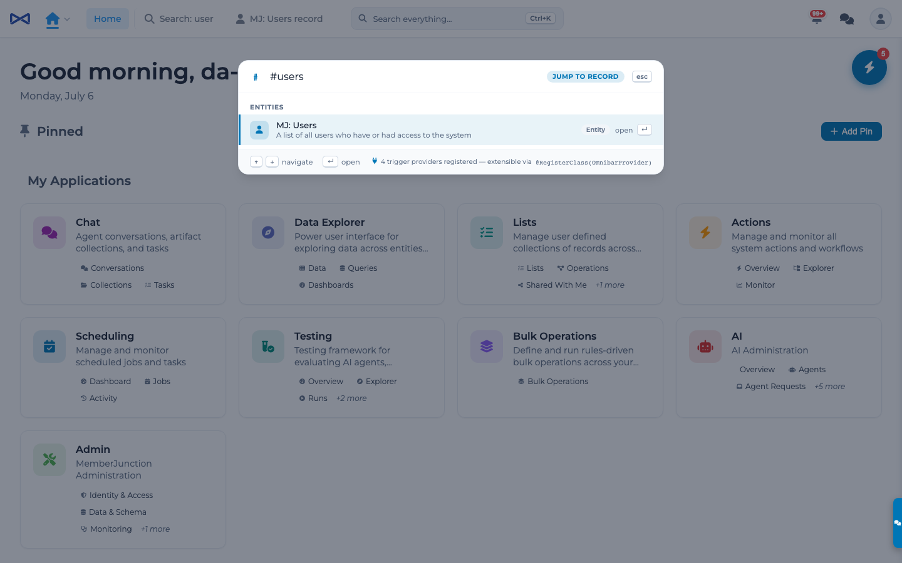
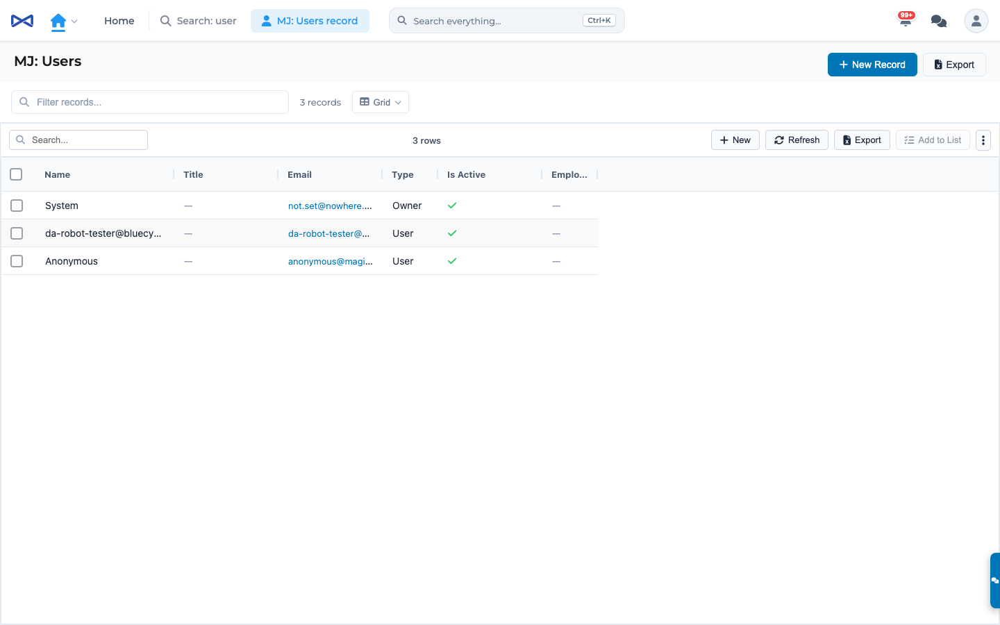
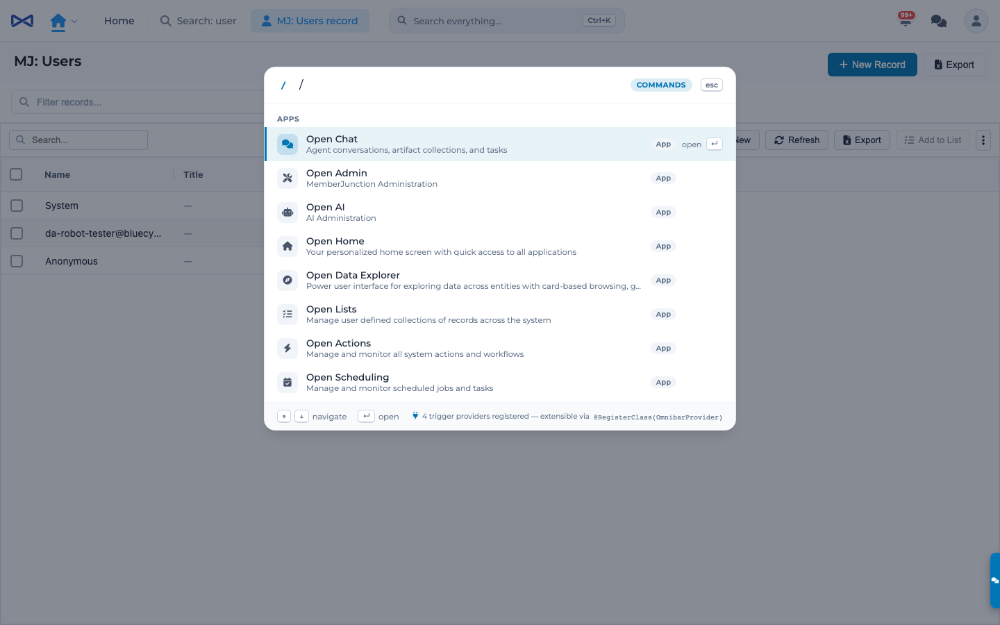
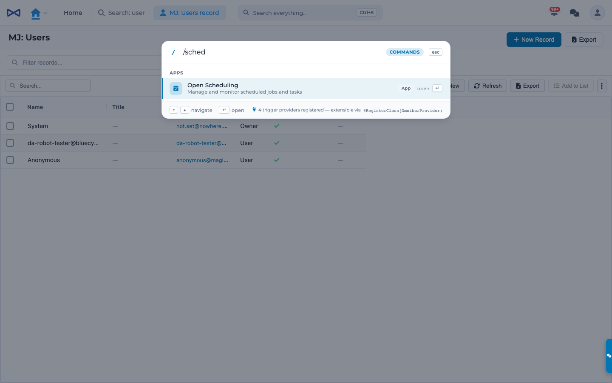
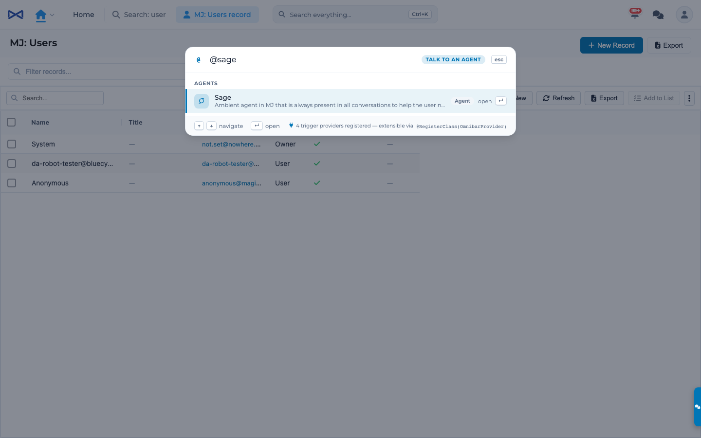
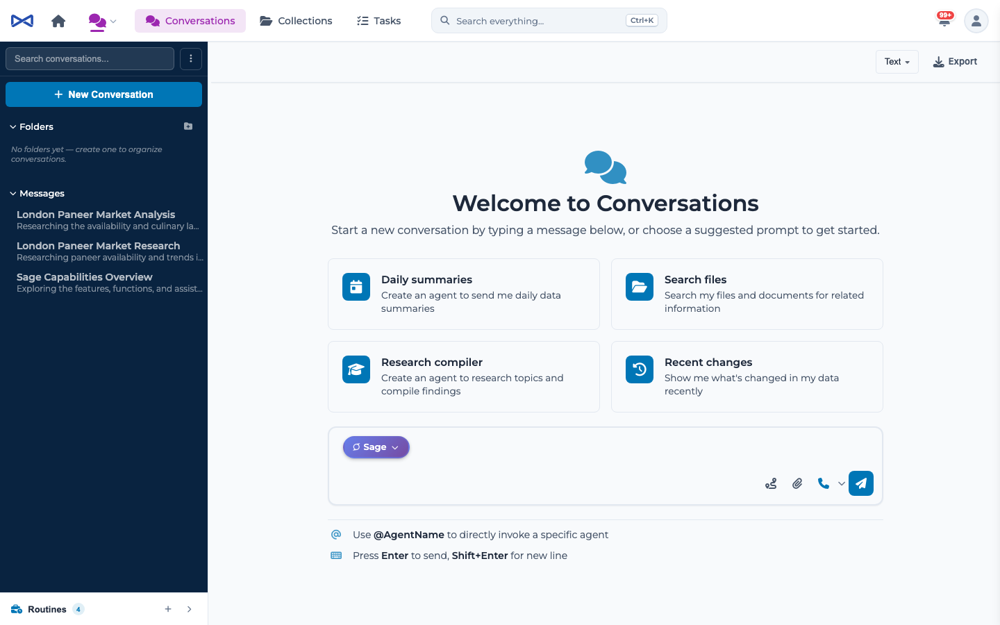

omnibar-command-palette · captured live against MJAPI + MJExplorer, 2026-07-04
The flag-ON header: click or Ctrl+K summons the palette. Flag OFF (Shell.Omnibar.Enabled=false) restores the legacy search composite byte-for-byte.

Trigger-hint chips (#, /, @) teach the palette; recents (searches + apps) below. Footer shows the live provider count from the OmnibarProvider registry.

Cross-source SearchEngine preview — grouped Records/Files/Content, relevance bars, scope pills, guaranteed "See all results" row into the Search Results tab.

# jump-to-recordgap fixedEntity matches + top records of the best entity; the record term is now scoped (query minus the matched entity name), so #mj: ai agent learning cycles resolves correctly.

Entity rows now navigate via OpenDynamicView. Fixing this exposed two latent core bugs, both repaired: resource-type resolution was MJ:-prefix-intolerant, and the User Views resource never honored the documented dynamic marker.

/ commands — installed apps onlygap fixedThe provider now reads ApplicationManager.Applications (the user's installed set) instead of the unfiltered system list — no more no-op rows.

/ fuzzy matching + nav itemsLegacy Ctrl+/ palette scoring tiers (exact > starts-with > contains > description > initials) + per-app nav destinations.

@ agents modeDelegates at runtime to ng-conversations' agent-mentions plugin (permission-filtered, zero compile dependency).

Selecting Sage lands in Chat with @Sage staged as a DRAFT (not sent) and the composer focused — via the new initialDraft seam and a SwitchToApp fix that now delivers query params on the default-app path.